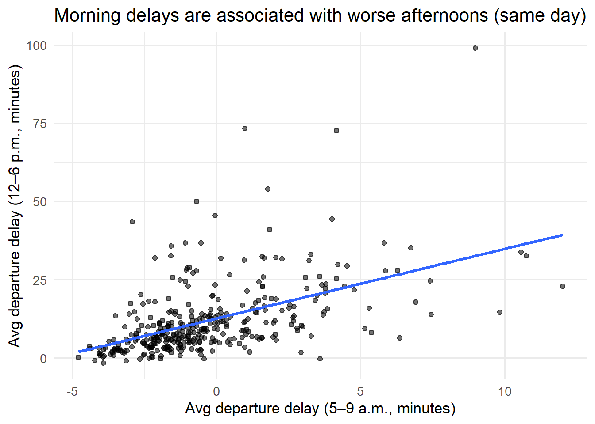
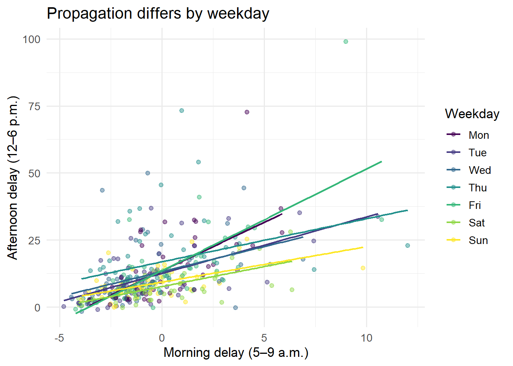
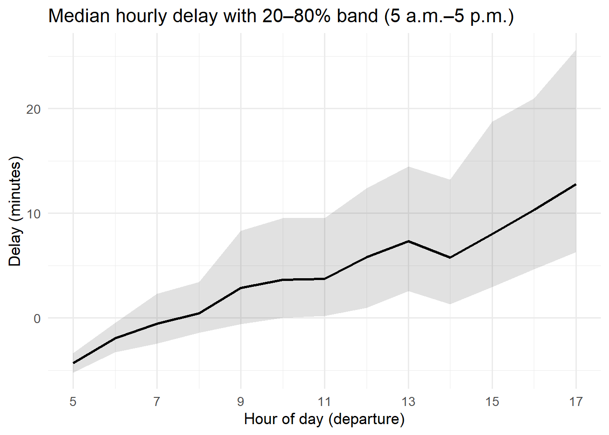

Code
library(tidyverse)
library(nycflights13)
library(broom)
theme_set(theme_minimal(base_size = 13))Airports are complex systems. If departures are delayed early (5–9 a.m.), do those delays propagate into the afternoon (12–6 p.m.) the same day?
We’ll build a daily panel and look for same-day relationships, then examine day-of-week patterns and within-day accumulation.
period_of <- function(dep_time) {
h <- floor(dep_time / 100)
case_when(
!is.na(h) & h >= 5 & h < 9 ~ "am_5_9",
!is.na(h) & h >= 12 & h < 18 ~ "pm_12_18",
TRUE ~ NA_character_
)
}
daily <- flights |>
mutate(period = period_of(dep_time)) |>
filter(!is.na(period)) |>
group_by(year, month, day, period) |>
summarise(avg_dep_delay = mean(dep_delay, na.rm = TRUE), .groups = "drop") |>
pivot_wider(names_from = period, values_from = avg_dep_delay) |>
mutate(
date = as.Date(sprintf("%04d-%02d-%02d", year, month, day)),
wday = lubridate::wday(date, label = TRUE, week_start = 1)
) |>
rename(delay_am = am_5_9, delay_pm = pm_12_18) |>
filter(is.finite(delay_am), is.finite(delay_pm))p_scatter <- daily |>
ggplot(aes(delay_am, delay_pm)) +
geom_point(alpha = 0.55) +
geom_smooth(method = "lm", se = FALSE) +
labs(
x = "Avg departure delay (5–9 a.m., minutes)",
y = "Avg departure delay (12–6 p.m., minutes)",
title = "Morning delays are associated with worse afternoons (same day)"
)
p_scatter`geom_smooth()` using formula = 'y ~ x'
# A tibble: 2 × 5
term estimate std.error statistic p.value
<chr> <dbl> <dbl> <dbl> <dbl>
1 (Intercept) 12.6 0.524 24.1 2.57e-77
2 delay_am 2.22 0.196 11.3 1.06e-25# A tibble: 1 × 2
r.squared adj.r.squared
<dbl> <dbl>
1 0.262 0.260Interpretation. A positive slope indicates same-day propagation: when the airport starts behind, it tends to stay behind.
`geom_smooth()` using formula = 'y ~ x'
Reading the plot. Steeper lines imply stronger carry-through from morning to afternoon. If weekends look flatter, demand/traffic complexity may be lower.
We check hourly averages to see if the day “drifts” upward after a bad start.
hourly <- flights |>
mutate(hour = floor(dep_time/100)) |>
filter(!is.na(hour), hour >= 5, hour < 18) |>
group_by(year, month, day, hour) |>
summarise(avg_delay = mean(dep_delay, na.rm = TRUE), .groups="drop") |>
group_by(hour) |>
summarise(p50 = median(avg_delay, na.rm = TRUE),
p80 = quantile(avg_delay, 0.8, na.rm = TRUE),
p20 = quantile(avg_delay, 0.2, na.rm = TRUE))
hourly |>
ggplot(aes(hour, p50)) +
geom_ribbon(aes(ymin = p20, ymax = p80), alpha = 0.15) +
geom_line(linewidth = 1) +
scale_x_continuous(breaks = seq(5,17,2)) +
labs(
title = "Median hourly delay with 20–80% band (5 a.m.–5 p.m.)",
x = "Hour of day (departure)", y = "Delay (minutes)"
)
Takeaway. If the band lifts after ~9–10 a.m., that suggests accumulation: early disruptions ripple forward as the schedule tightens.
Questions to explore next: Are certain carriers or routes better at dampening propagation? Do turnaround times or gate constraints explain differences?